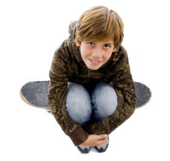

- Baw się z dzieckiem wykorzystując m.in.:
- gry planszowe;
- techniki plastyczne (np. wycinanki, wydzieranki, farby, kredki, kolorowani, plastelina, orgiami, witraże, masa solna, malowanie palcami);
- rebusy, krzyżówki, labirynty odpowiednie do wieku;
- czytanie książek, ich opowiadanie;
- obrazki do ich opisu i przewidywania, co się dalej stanie;
- śpiew, muzykę taniec dla zwiększenia relaksacji;
- zabawy ruchowe;
- odgrywanie scenek z bajek, filmów;
- zabawy w teatr np. z kukiełkami, pacynkami;
- recytowanie wierszy, czytanie dialogów na role z odpowiednią intonacją.
- Przyjrzyj się specyfice nieśmiałości swojego dziecka. Zwróć uwagę, czy twoje dziecko jest nieśmiałe w kontakcie z jedną osobą czy w grupie; czy tylko w nowych, nieznanych czy wszystkich sytuacjach społecznych; czy dziecko ma zahamowania tylko w bardzo określonych sytuacjach (np. telefonowanie, jedzenie w miejscu publicznym, zabawa) czy we wszystkich. Zbadanie specyfiki trudności społecznych dziecka pozwoli określić, jakich umiejętności powinno ćwiczyć.
- Modeluj pewność siebie w sytuacjach społecznych. Modelowanie to najbardziej naturalny sposób uczenia się u dzieci. Zatem:
- pierwszy mów: „Dzień dobry” znajomym i przedstawiaj się;
- bądź przyjazny do ludzi;
- praw innym komplementy;
- pomagaj innym, gdy widzisz taką potrzebę;
- podejmuj ryzyko i komentuj, jak to ważne (np. „Myślałam, że będzie trudniej”, „Myślałem, że pójdzie mi lepiej, ale przynajmniej wiem co robić następnym razem”).
- Ćwicz w domu sytuacje społeczne trudne dla dziecka (uścisk ręki, patrzenie w oczy, rozmowy z innymi dziećmi i dorosłymi, przedstawianie się itp.)
- Unikaj
- publicznego ośmieszania dziecka;
- publicznego krytykowania ludzi;
- poniżania siebie, gdy Ci coś nie wyjdzie;
- poniżania dziecka, gdy mu coś nie wyjdzie.
- Ucz umiejętności społecznych jak najwcześniej
- organizuj spotkania z innymi dziećmi w domach;
- ucz, jak wchodzić w grupę i jak z niej wychodzić;
- tłumacz, na czym polega przyjaźń;
- całą rodziną ćwiczcie bycie w dobrym kontakcie (uśmiechanie się, komplementowanie wzajemne, uściski rąk);
- proponuj zabawy w ćwiczenie zachowań społecznych poza domem, np. w proszenie o pomoc w sklepie, pytanie o drogę, zakupy w lokalnym sklepie, uśmiechanie się do ludzi, mówienie „dzień dobry” itp.
Warto zwrócić uwagę, jaką zmianę może przynieść dziecku nauczenie go tak prostego zachowania jak uśmiechanie się!
- Ucz, że istnieje więcej niż jeden sposób patrzenia na sprawy, więcej niż jedno rozwiązanie problemu
- Porażka uczy, czego mamy nie robić, by osiągnąć to, co chcemy.
- Ucz dziecko poszukiwania rozwiązań, aż znajdzie właściwe (ćwicz w sytuacjach życia codziennego).
- Zachęcaj do zmian małymi kroczkami
Duże kroki mogą bardzo zniechęcić nieśmiałych. Metoda głębokiej wody (np. wysłanie dziecka na obóz) jest dobra tylko wtedy, gdy jesteś pewny pozytywnego rezultatu. Gdy nie – pozwól dziecku wchodzić wolno!
Najpewniejszym sposobem pokonania nieśmiałości u dzieci jest pozwolenie im na robienie tak małych kroczków, by częściej doświadczały sukcesu niż porażki, a jest to najbardziej prawdopodobne w zadaniach, w których są dobre.
- Pomóż dziecku odkryć zdolności i umiejętności, które czynią go wyjątkowym
Rozpoznaj zdolności dziecka – najpierw te, które może realizować w samotności. Następnie, stopniowo, pozwól mu się wykazać najpierw w gronie wspierających dorosłych, a potem wśród rówieśników.
- Pomóż dziecku nauczyć się radzić sobie z emocjami
Słuchaj dziecka z empatią, staraj się pomóc w rozpoznaniu jego emocji. Nie krytykuj i nie oceniaj za odczuwanie konkretnych uczuć. Pomagaj w znalezieniu sposobów radzenia sobie z nieprzyjemnymi emocjami.
- Ucz tolerancji i szacunku dla innych Nieśmiałe dzieci są zwykle bardzo krytyczne wobec siebie i innych. Dlatego pokazuj, że ludzie nie muszą być idealni, by być wartościowymi. Im więcej okazujesz wyrozumiałości w stosunku do innych, tym bardziej dzieci będą wyrozumiałe wobec siebie... (i Ciebie).
- Rozumnie używaj etykietki „nieśmiały”
- Zawsze łącz nieśmiałość z czymś pozytywnym („Jesteś nieśmiałym dzieckiem, jak wielu wybitnych ludzi – Einstein, Kidman, Hanks, J. Roberts”);
- Nie używaj nieśmiałości jako wymówki dla dziecka, by nie musiało próbować;
- Podkreślaj inne ważne cechy dziecka, w które naprawdę wierzysz;
- Nie używaj etykietki, gdy nie jesteś absolutnie przekonany, że będzie to miało pozytywny efekt.
- Używaj uśmiechu (szerzej: POCZUCIA HUMORU) jako sposobu na zwiększenie dystansu do własnych problemów i jako dobrej techniki na rozładowanie napięć w kontaktach z ludźmi.
- Podkreślaj jak najczęściej mocne strony nieśmiałego dziecka, koncentruj się na jego zaletach, stosuj pochwały opisowe bez oceniania.
- Zachęcaj do nauki tańca W PARZE lub uprawiania dowolnego sportu zespołowego.
Opracowała Ewa Cieszko-Kowalska na podstawie książki „Jak przezwyciężyć nieśmiałość i lęk przed otoczeniem?” M.Antony, R.Swinson, Sensus 2007
Apel:
Nauczycielu możesz pomóc nieśmiałemu uczniowi, jeżeli będziesz stosował zasady podane poniżej:- Traktuj nieśmiałość jako dość powszechną cechę charakteru i wyrażaj się o niej tylko w pozytywnym kontekście.
- Nie zapominaj o istnieniu nieśmiałych dzieci w klasie, ale i nie wyróżniaj ich.
- Daj nieśmiałemu dziecku zadania do wykonania, do których samo by się nie zgłosiło (np. wytarcie tablicy, zamknięcie klasy po lekcjach, rozdanie klasówek, zebranie informacji od innych uczniów na jakiś temat), by umożliwić mu doświadczanie coraz większego poczucia kompetencji.
- Podkreślaj jego sukcesy, zalety, mocne strony i pokazuj osiągnięcia.
- Zachęcaj do wypowiadania się na forum grupy poprzez zadawanie pytań pomocniczych życzliwie ukierunkowujących dziecko; pozostawiaj mu więcej czasu do namysłu.
- Rozbudzaj jego zainteresowania, które może dzielić z kolegami z klasy.
- Pomóż nauczyć go, jak inicjować kontakt z drugą osobą poprzez zajęcia grupowe, w parach.
- Obniżaj jego napięcie emocjonalne poprzez indywidualne rozmowy nastawione na wysłuchanie, zrozumienie sytuacji oraz nazywanie emocji.
- Udzielaj wskazówek rodzicom, aby potrafili pomóc swojemu dziecku
- Nagradzaj nawet małe postępy dziecka.
- Zwracaj uwagę na dokuczanie nieśmiałemu dziecku w grupie czy w klasie i natychmiast interweniuj.